STUDIO GHIBLI!-
El Studio Ghibli es un estudio de animación japonés, que fue fundado en 1985 por el director Hayao Miyazaki.
Estas son algunas de sus peliculas:
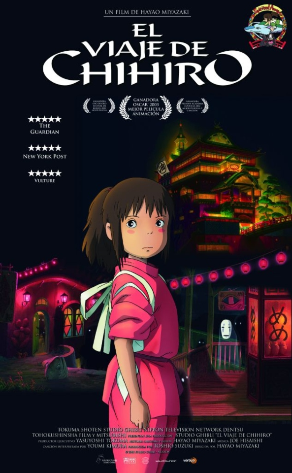
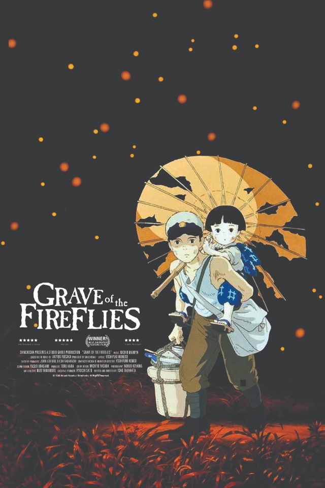
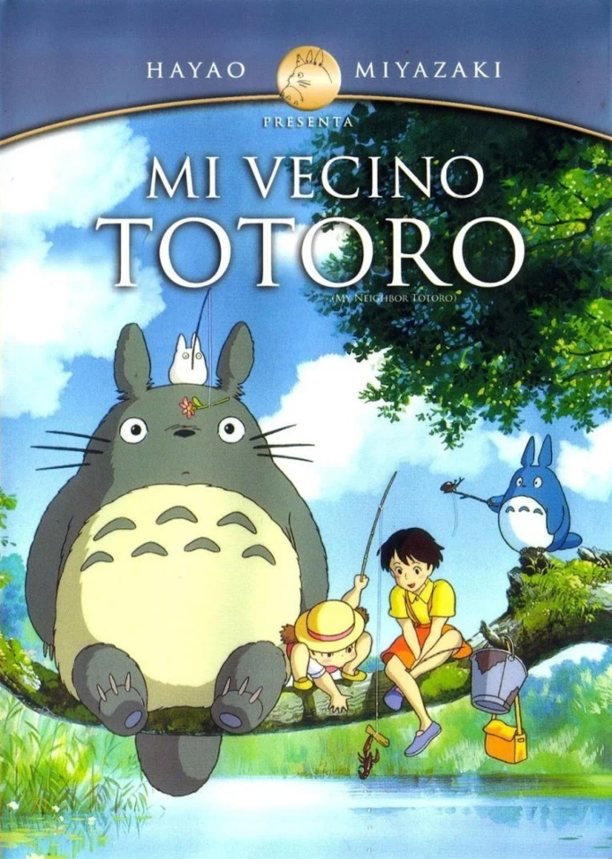
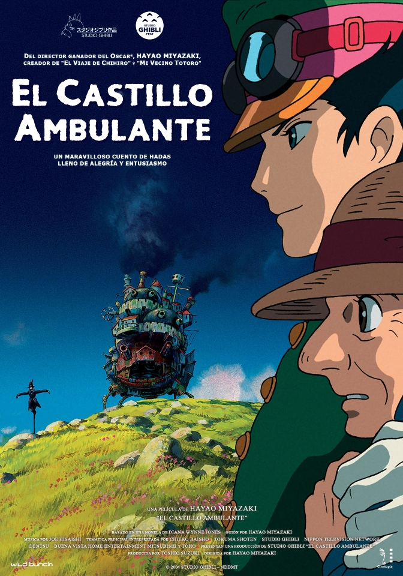
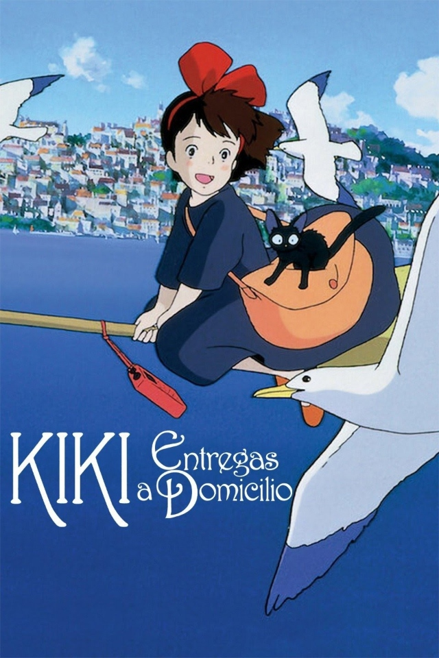
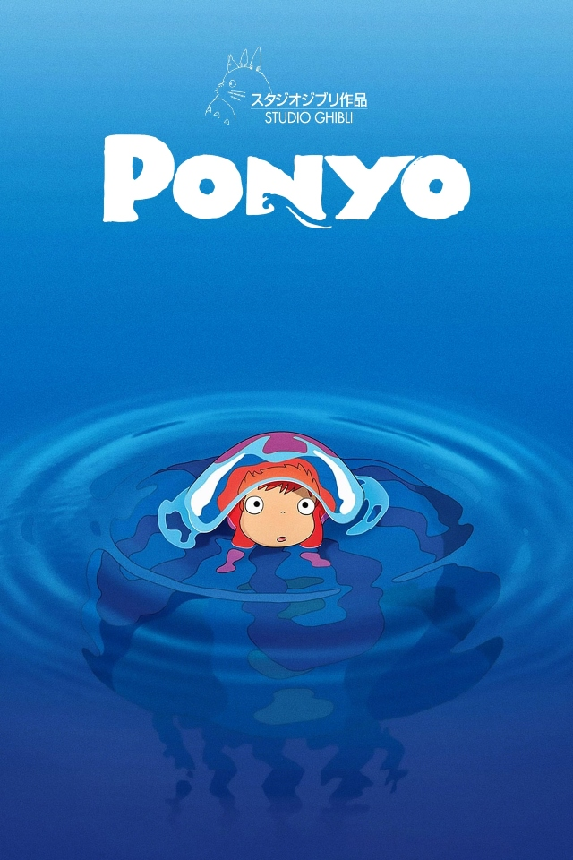
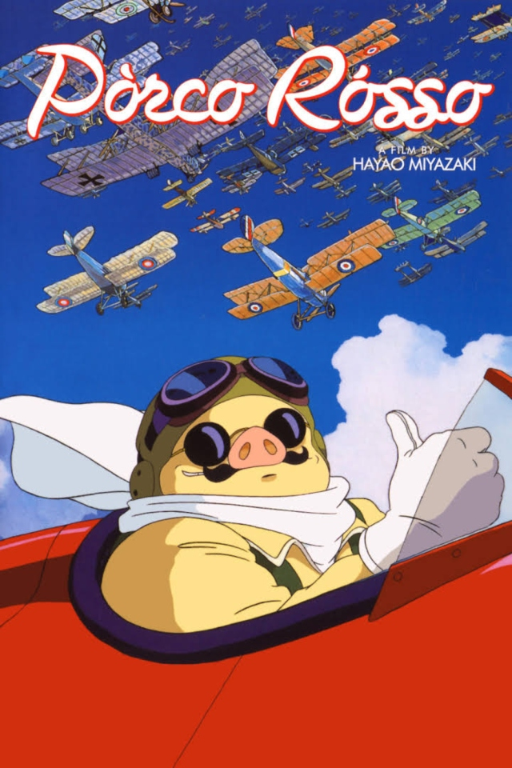
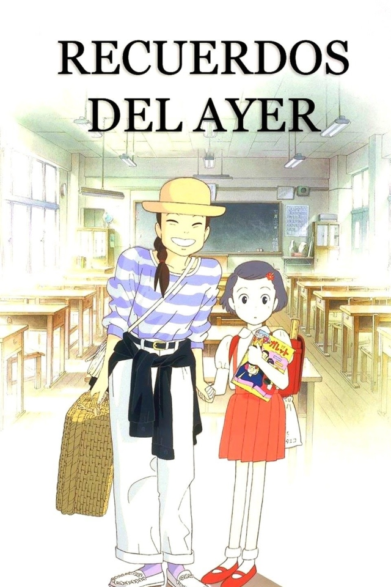
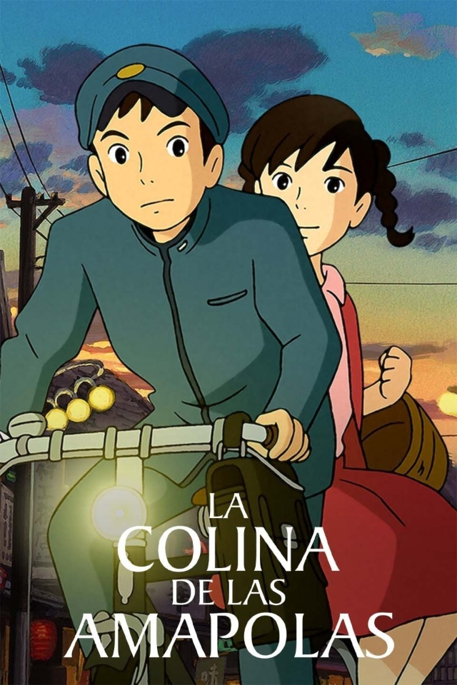
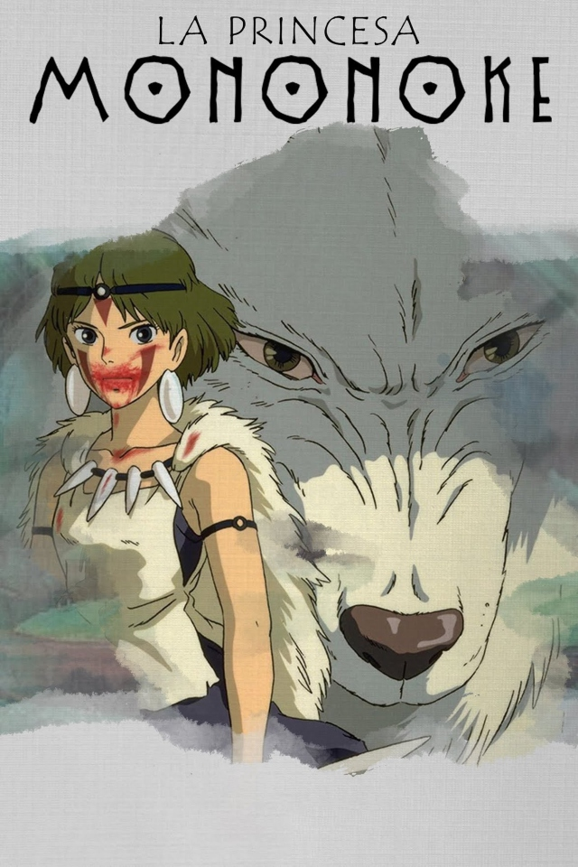
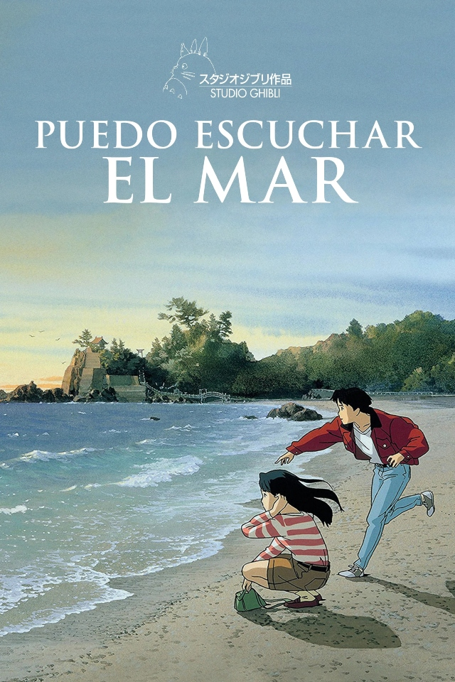
Studio Ghibli tambien cuenta con un parque tematico,
"Ghibli Park", el cual presenta atracciones basadas en
varias de las películas producidas por el estudio.
Se encuentra en Nagakute, Aichi, Japón.
Leer mas
Escenas
Paginas oficiales